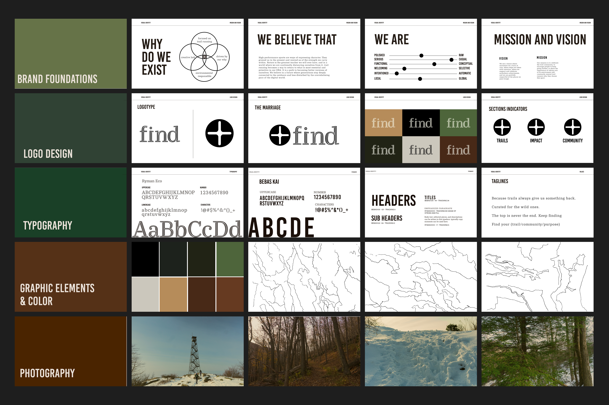
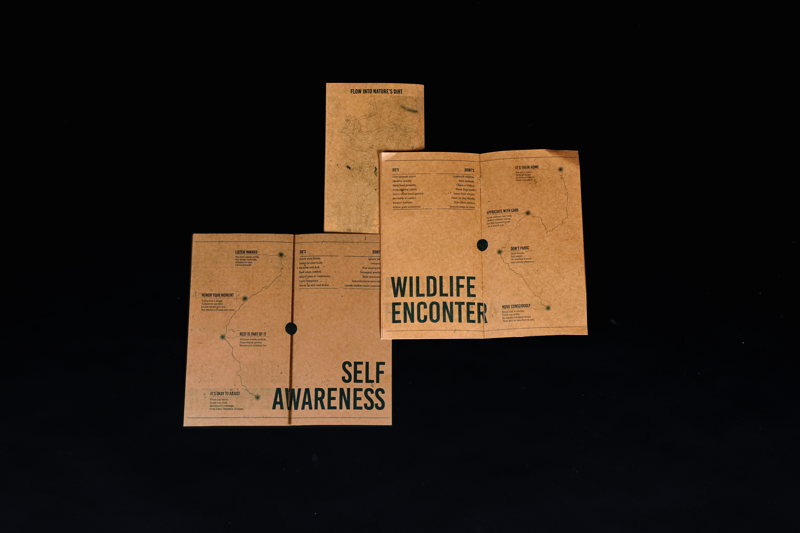
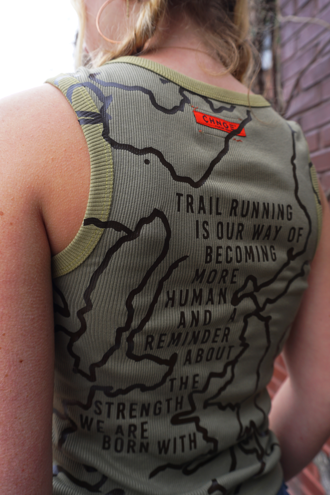
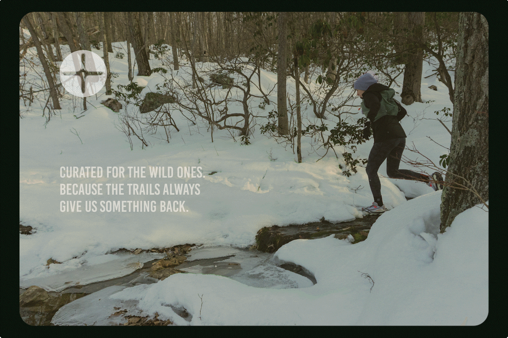

FIND: Trail Running with Purpose
Visual Identity | Publication | Webdesign
Feel Imagine Navigate Discover (FIND) is a members’ club that celebrates the trail running mindset. Here, across different trails, through community gatherings focused on preservation, performance, and creative expression, we share our love for the outdoors and the sport. We celebrate the community that takes us to the next mile and express gratitude for the nature that we are privileged to be in.
The why behind trail running is a question that may never be fully answered; seeking discomfort in a wild place reveals truths that may never be spoken. FIND invites its community to seek those answers and act to keep the sport growing in a mindful way. FIND has developed a digital platform to strengthen the community. On our social media and website, FIND spreads good practices and mindfulness around the sport, organizing native species restoration and wildlife care events, offering trail running experiences for all levels, and sharing projects and publications that align with our way of being.
Sustainability is an important value for us, and with that, the sourced materials are thoughtfully chosen, using handmade paper, risograph prints, and design decisions that align with this principle. Our partnerships with gear and lifestyle brands prioritize sharing the same principles of conscious footprints and the trail running mindset of constantly looking for the next way of making the practice better.
FIND connects us to what is most real inside each of us and takes care of what is most real on planet Earth.









